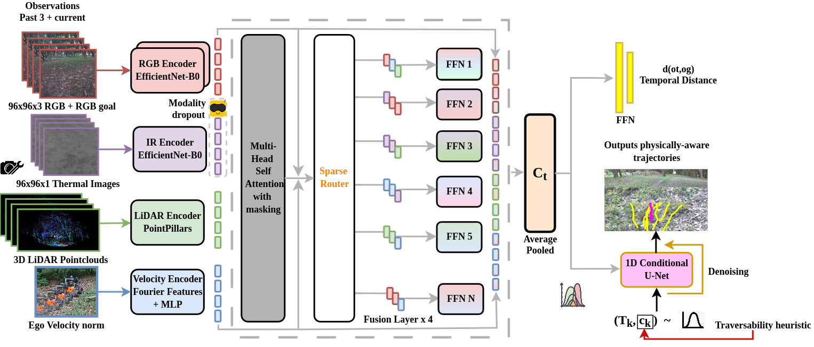
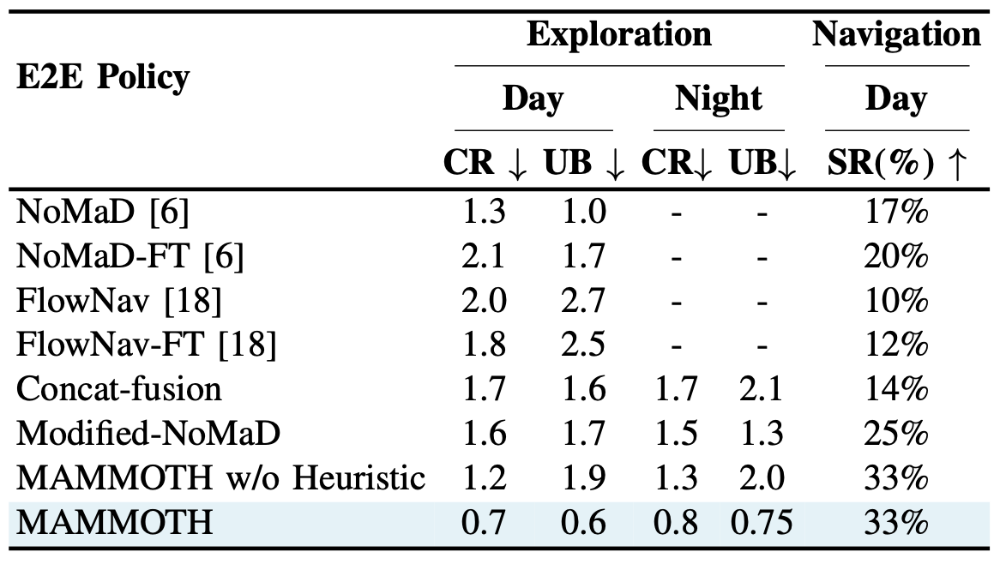
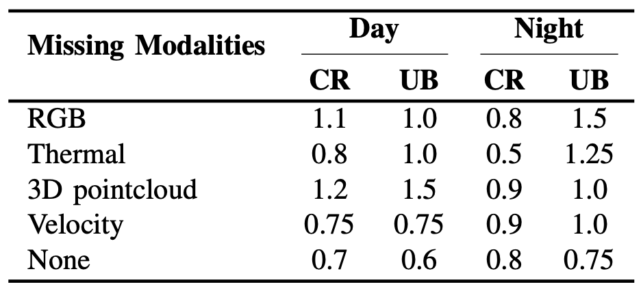
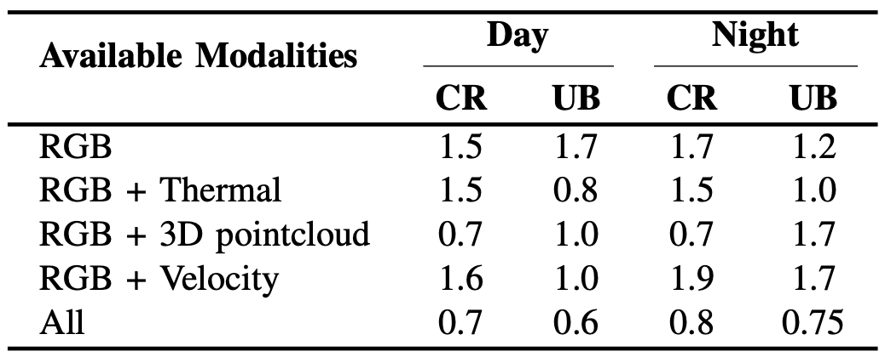
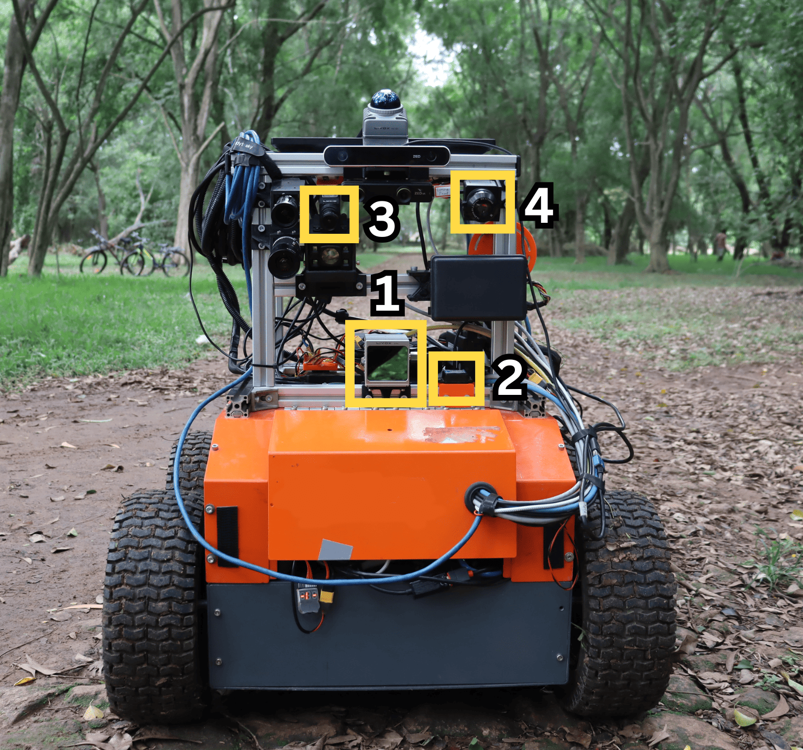

MAMMOTH: A Multi-Modal End-to-End Policy for Off-Road Mobility Robust to Missing Modality
Key Contributions
- Synergistic multi-modal fusion. MAMMOTH fuses RGB, thermal LWIR, 3D LiDAR pointclouds and ego velocity through a sparse Mixture-of-Experts (MoE) backbone with per-modality routers and Laplace gating, learning both selective reliance on informative modalities and deep cross-modal understanding.
- Flexible and robust deployment. A modality dropout training scheme masks out entire modalities during training, giving MAMMOTH zero-shot robustness to real-world sensor degradation and the ability to run on robots that lack a full sensor suite.
- Physically-aware trajectory generation. A diffusion policy jointly models candidate trajectories and a self-supervised traversability heuristic derived from IMU signals, letting MAMMOTH prefer safer, smoother paths at negligible computational overhead.
MAMMOTH is, to the best of our knowledge, the first end-to-end policy to demonstrate robust off-road mobility in complete night-time conditions while also generalizing to missing-modality scenarios, validated through extensive real-world deployment across five distinct off-road environments.
Abstract
Reliable autonomous navigation in unstructured off-road environments remains a critical unsolved challenge due to extreme terrain diversity, drastic illumination variations and acute sensor degradation. Recent developments have approached the problem as a traversability costmap estimation or visual navigation task. However, many exhibit heavy reliance on RGB modality, leading to poor performance in varied illumination such as glares, shadows or low ambient light. Achieving robust generalization in such conditions requires integrating modalities that provide supplementary scene information. Such multi-modal methods suffer from a rigid dependency on the presence of near-perfect sensor inputs, leaving them unable to robustly handle sensor degradation or individual modality failure. To address these limitations, we introduce MAMMOTH (MAsking Multi-Modal inputs for Off-road Traversability Heuristic-informed navigation), a unified end-to-end navigation policy for robust off-road visual-goal-conditioned navigation and undirected exploration. Specifically, MAMMOTH efficiently fuses multi-modal observations (RGB, Thermal, 3D Pointcloud and Ego Velocity) and is trained with a modality dropout scheme, enabling it to generalize to missing modalities at inference time. Furthermore, we employ a diffusion policy to learn the joint conditional probability distribution of physically-grounded trajectories and an intrinsic traversability heuristic. MAMMOTH utilizes this heuristic to prefer safer, smoother trajectories. We validate MAMMOTH through extensive real-world robot experiments in distinct off-road environments, including night-time operation. Our results demonstrate superior performance, with significant improvements in collision avoidance, terrain-aware planning and generalization to missing modalities. The code and dataset used for this work will be made publicly available.
Method: MAMMOTH Architecture

Model architecture of MAMMOTH. Distinct encoders process RGB, thermal, 3D pointcloud and ego velocity inputs. In the fusion layer, a sparse router dynamically selects and fuses features by feeding into expert networks. A diffusion policy then generates physically-grounded multi-modal trajectories while an MLP predicts the temporal distance to the goal.
MAMMOTH encodes the current and past three observations from each modality — RGB and thermal images via separate EfficientNet-B0 encoders, 3D LiDAR pointclouds via a PointPillars encoder, and ego velocity via Fourier features — into 256-dimensional latent tokens. These tokens pass through four fusion layers, each combining Multi-Head Self-Attention with masking and a sparse MoE layer that uses four lightweight, per-modality routers with Laplace gating to route tokens to a shared pool of 16 expert networks (Top-4 selected per token).
During training, RGB, 3D pointcloud and velocity tokens are randomly masked with probability p = 0.5 across all masking combinations, while the thermal modality is masked with a lower probability of p = 0.2 to compensate for its absence in the public TartanDrive 2.0 dataset. At inference, any subset of modalities can be deterministically dropped to simulate sensor failure — MAMMOTH's "mask-and-ignore" strategy avoids the computational overhead of token reconstruction while retaining strong cross-modal robustness.
The fused context conditions a 1-D Conditional U-Net trained as a Denoising Diffusion Probabilistic Model (DDPM, T = 10 steps) that jointly generates 8 candidate trajectories of 8 waypoints each, augmented with a self-supervised traversability heuristic derived from the Power Spectral Density of vertical (Z-axis) IMU acceleration. At inference, candidate trajectories are ranked by this heuristic to prioritize vehicle safety and stability.
Comparison with Baselines
MAMMOTH is evaluated against NoMaD and FlowNav, along with two ablation baselines (Concat-fusion, Modified-NoMaD) and a version without the traversability heuristic, across five unseen real-world off-road environments. We report the mean collision rate (CR, collisions per minute), the mean number of "undesirable behaviors" (UB, e.g. trail-boundary violations or manual takeovers) and the goal-reaching success rate (SR) for daytime visual-goal-conditioned navigation.

MAMMOTH outperforms all baselines, reducing collision rate by 0.6 and improving daytime success rate by 16% over the best-performing baseline, NoMaD. RGB-only baselines like NoMaD and FlowNav cannot operate at night at all, whereas MAMMOTH remains fully operational in low ambient light and even outperforms every baseline's daytime metrics while doing so — underscoring the value of fusing thermal, LiDAR and velocity information beyond RGB alone.
Missing Modality Robustness
To validate MAMMOTH's deployability under acute sensor degradation, we deactivate individual sensors and observe the impact on obstacle avoidance and traversability estimation over 12 minutes of continuous autonomous mobility, in both day and night conditions.

Single missing modality: MAMMOTH degrades gracefully when any one sensor is removed.

Modality contribution: adding 3D pointcloud sharply cuts collision rate; adding thermal improves terrain understanding (lower UB).
MAMMOTH performs best when no perception modality is missing, but generalizes well to any single missing modality, particularly at night. 3D pointcloud plays the largest role in collision avoidance, while thermal and ego velocity most improve terrain understanding after dark — evidence that MAMMOTH's sparse MoE backbone learns genuine selective reliance rather than a fixed fusion recipe.
Architectural Ablation Study
We validate MAMMOTH's design decisions — a pretrained vs. from-scratch vision encoder, the number of experts, the Top-K routing value, and the gating/router design — over 12 minutes of continuous autonomous mobility per configuration. Our final configuration (Ours) uses 16 experts, Top-4 routing, Laplace gating and per-modality routers.
| Ablation | Day | Night | ||
|---|---|---|---|---|
| CR ↓ | UB ↓ | CR ↓ | UB ↓ | |
| Pretrained | 1.3 | 1.0 | - | - |
| Experts = 8 | 0.8 | 1.3 | 0.9 | 1.8 |
| Experts = 32 | 1.3 | 1.2 | 1.1 | 1.2 |
| Top-2 | 1.5 | 1.3 | 1.8 | 1.5 |
| Top-8 | 1.2 | 0.8 | 1.4 | 1.5 |
| Softmax gating | 1.0 | 0.8 | 1.2 | 0.75 |
| Joint router | 1.3 | 1.8 | 1.3 | 1.8 |
| Ours | 0.7 | 0.6 | 0.8 | 0.75 |
Real-World Deployment

Hardware setup. Our sensor suite includes a Livox Avia LiDAR (1), Wit IMU JY901 (2), Lucid Vision Labs Triton TRI032S-CC camera (3) and Trimer TRA_L6D_ZDN LWIR thermal camera (4).
All trained models were deployed on Copernicus, our all-terrain ground robot, with onboard inference running on an NVIDIA Jetson Orin AGX under ROS2 Humble at 2Hz, with an average robot speed of 0.8 m/s. We evaluate MAMMOTH across five distinct real-world off-road environments — deliberately chosen to be cluttered, forest-like settings with dense overhead trees, no clear trails, and complex terrain, unlike the well-lit, clear-trail environments used in prior off-road navigation work. MAMMOTH was tested during both day (adequate ambient light) and night (low ambient light) operation.
Video Presentation
Paper
BibTeX
@misc{kotian2026mammothmultimodalendtoendpolicy,
title={MAMMOTH: A Multi-Modal End-to-End Policy for Off-Road Mobility Robust to Missing Modality},
author={Ahaan Kotian and Shivani Subramanyan and Suresh Sundaram},
year={2026},
eprint={2607.12965},
archivePrefix={arXiv},
primaryClass={cs.RO},
url={https://arxiv.org/abs/2607.12965},
}